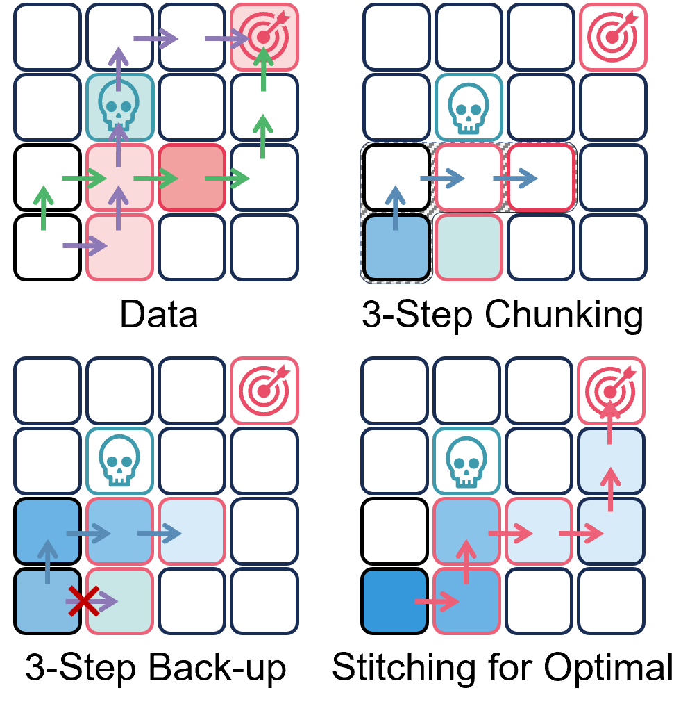
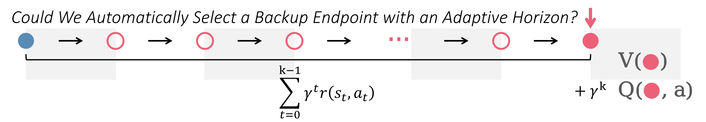
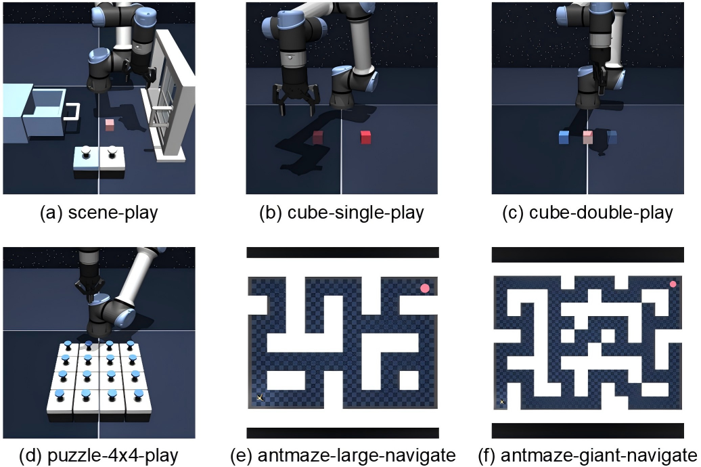
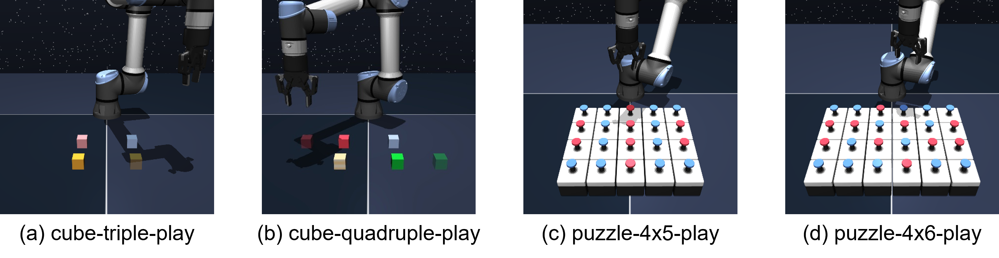
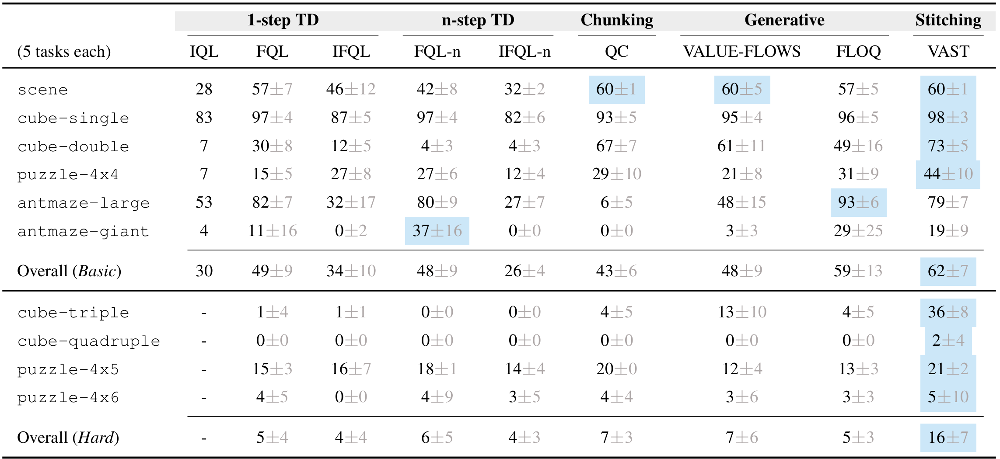
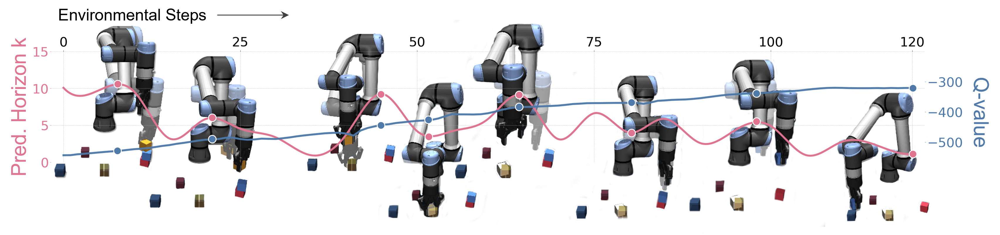

The ALL Behind VAST
The quintessence of RL lies in value.
However, conventional temporal-difference (TD) learning objectives suffer from value-estimation bias that accumulates over the horizon, while extended-horizon modeling methods, such as n-step TD backups and chunking value, adopt a rigid, fixed-horizon value-modeling recipe that is often not flexible enough to capture complex value structures in long-horizon, multi-stage tasks.
Human decision-making in real-world scenarios exhibits a high degree of dynamism and adaptability regarding credit assignment over task horizons. When planning for distant objectives, humans typically only conceptualize coarse-grained sub-goals with a rough estimate of horizon length (e.g., walk straight for about 100m and then turn right); while for immediate and critical decisions, they will focus exclusively on proximal, actionable consequences (e.g., decelerate and move left to avoid an obstacle). However, the truly adaptive and practically deployable mixed-horizon offline RL paradigms remain largely underexplored.

Figure 2: 4x4 grid navigation.
Although deliberately simple, this toy example can be viewed as a local subproblem embedded within a much larger maze. It shows that while coupling value updates to a fixed horizon can better stabilize long-horizon learning scenarios, it simultaneously obscures critical short-range decisions, thereby trapping learning in poor local optima. Stability should not be bought at the cost of erasing decisive short-term signals, motivating adaptive horizon modeling that preserves both robustness and flexibility. Therefore:

Where the selection is required to be Efficient, Effective, Adaptive, and Optimal.
Methods
Modeling Cumulative Return for Adaptive Horizon Length
Addressing this question elegantly requires a more general operator, that can evaluate the cumulative return between any pair of states under a dynamically chosen horizon.
This insight motivates the introduction of the Horizon-Conditioned Cumulative Return (G-function):
G defines a value mapping relationship between arbitrary k-step reachable state pairs and the policy-induced distribution. This formulation breaks the dependence of value targets on fixed local backup segments and further supports flexible temporal composition across extended trajectory segments:
Horizon Adaptive Offline Policy Learning
To inject G in the backup process, it is naturally further introduce the stitching Bellman operator. Repeatedly applying this operator on V will converge to a unique fixed point V*. It can be proved to be a 𝛾-contraction mapping.
The stitching Bellman operator offers a new way to bootstrap the value estimates based on the optimal horizon lengths and target states. Together there need a stitching policy that simultaneously selects the best horizon k for value stitching and the reward-maximizing sub-goal.
It is sufficient to directly extract the execution policy from the learnt value function. In the established VAST implementation, we learn a goal-conditioned single-step policy and execute with rejection sampling.
Experiments
VAST is evaluated on state-based tasks on OGBench (w/ singletask variant for offline RL) over 10 domains (6x basic domains + 7x hard domains), in total of 50 tasks. We report average success rate over 8 seeds at 1M gradient steps. We select 8 baselines for comprehensive evaluation, which could be categorized into value learning methods with one-step / multi-step TD, chunking, and generative value.

Figure 3: OGBench Basic.

Figure 4: OGBench Challenge.
Main Results
VAST achieves the best or near-best performance in both domain-wise averages and the overall score, with particularly gains on manipulation domains such as scene, cube, and puzzle. VAST is also the strongest method across all Hard domains, achieving an overall score that is 2.5x higher than the best baseline.

Table 1: OGBench Results. We report the aggregate score on all single tasks for each category, averaging over 8 random seeds. VAST achieves the best or near-best performance against other baselines across 10 domains, 50 tasks in total.
Learning Curves
Figure 5 shows the offline learning curves in puzzle-4x4-play (Top), cube-double-play (Middle), and cube-triple-play (Bottom). VAST outperforms competing methods on most tasks, and its sustained upward trend in the Hard setting further highlights its scalability.


Figure 5: Learning Curves.
Qualitative Performance
We visualize the ground-truth trajectory together with the future states predicted by VAST in Figure 6. The predicted horizon follows a plausible sequence of phased atomic intentions, suggesting that the policy selects an effective intermediate target and thereby progresses toward stable, value-maximizing actions.

Figure 6: Visualization on cube-triple-play-task3 (pop_from_stuck). The solid robot arm shows the current pose, while the transparent arm shows the sub-goal.
BibTeX
@article{zheng2026vast,
title = {Horizon Adaptive Offline Policy Learning via Value Stitching},
author = {Kexin Zheng and Xianyuan Zhan and Xintao Yan},
year = {2026},
journal = {arXiv preprint arXiv:2606.21136}
}